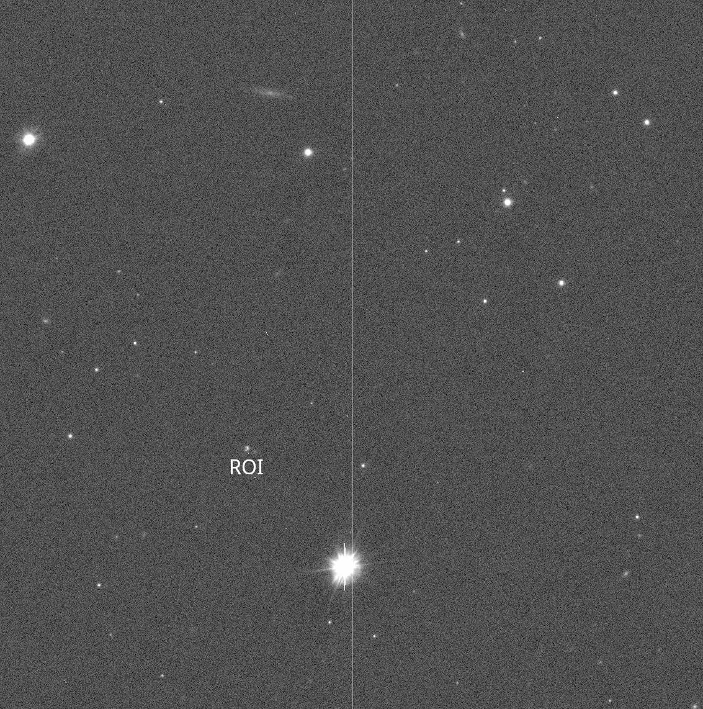
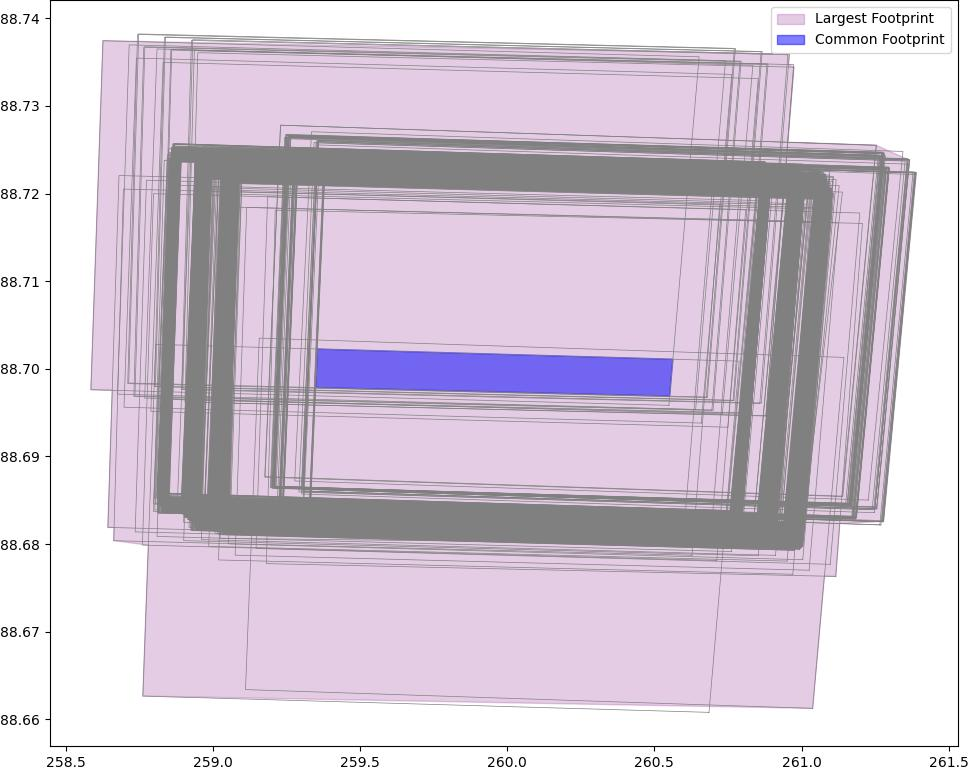
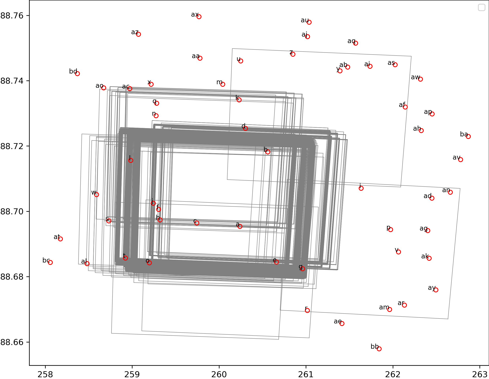
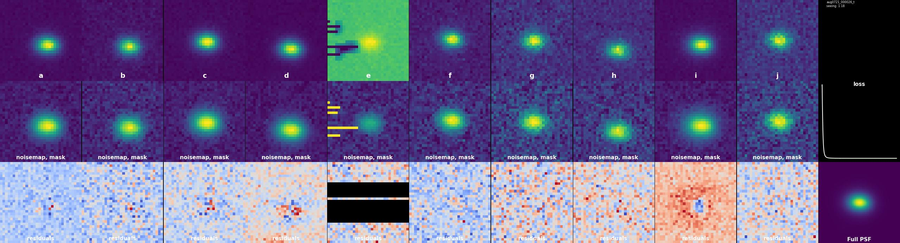
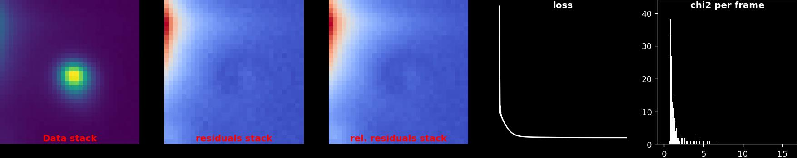
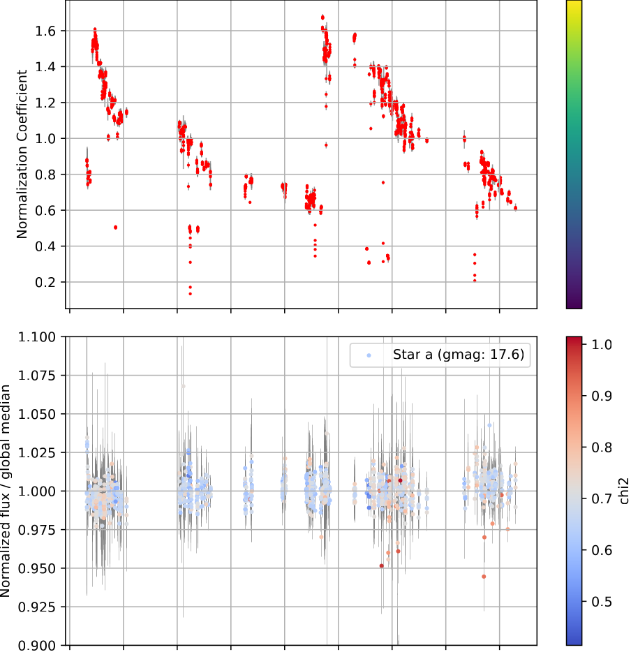

lightcurver tutorial
Introduction
By default, lightcurver is a pipeline which executes all its steps sequentially,
through the lightcurver.pipeline.workflow_manager.WorkflowManager class.
So, the most basic python script executing the pipeline would be as follows:
import os
os.environ['LIGHTCURVER_CONFIG'] = "/path/to/config.yaml"
from lightcurver.pipeline.workflow_manager import WorkflowManager
if __name__ == "__main__":
wf_manager = WorkflowManager()
wf_manager.run()
Where the config.yaml file needs to be carefully tuned before execution. You should always start from
this template.
You can also run the script above directly from the command line with the following command:
lc_run /path/to/config.yaml
lc_run -h will print the following list of steps performed by the pipeline:
read_convert_skysub_character_catalog
plate_solving
calculate_common_and_total_footprint
query_gaia_for_stars
stamp_extraction
psf_modeling
star_photometry
calculate_normalization_coefficient
calculate_absolute_zeropoints
prepare_calibrated_cutouts
model_calibrated_cutouts
lc_run /path/to/config.yaml --start stamp_extraction --stop psf_modeling
lc_run /path/to/config.yaml --start model_calibrated_cutouts
In this tutorial, to understand the role of the different steps,
we will first execute each step manually rather than executing the pipeline through the WorkflowManager.
I will provide you with some wide field images that you can use to follow along. Note the following:
- The images are already plate solved, such that you will not need to install
Astrometry.neton your computer. Your real life examples will most likely not be, so you should consider installing it. - Things will be excruciatingly slow if you do not have a GPU. I would consider using only 4-5 frames in this case.
You can work in a jupyter notebook or just write python scripts with the commands we will execute below.
Running lightcurver function calls in python scripts
On Mac and Windows computers, you would need to wrap all your function calls in a if __name__ == "__main__" block.
These are omitted in the code snippets below for brevity, but you will get an error due to the way multiprocessing
spawns processes on Mac and Windows if you don't.
Preparing the working directory and data
The example dataset consists of a few frames from the monitoring of a lensed quasar with the VLT Survey Telescope (VST).
You can find it at this link, but we will download it below anyway.
Start by creating a working directory. I will assume the working directory /scratch/lightcurver_tutorial, please
replace this with your own.
export workdir='/scratch/lightcurver_tutorial'
mkdir $workdir
cd $workdir
wget https://www.astro.unige.ch/~dux/vst_dataset_example.zip
unzip vst_dataset_example.zip
/scratch/lightcurver_tutorial/raw, here is what a single frame looks like, with the region
of interest marked:

The pipeline also expects a function able to read the header of your fits files. Store the following python function:
def parse_header(header):
from dateutil import parser
from astropy.time import Time
exptime = header['exptime']
gain = header['gain']
time = Time(parser.parse(header['obstart']))
return {'exptime': exptime, 'gain': gain, 'mjd': time.mjd}
$workdir/header_parser/parse_header.py.
The pipeline expects to find this file at this exact location relative to your working directory.
You will need to adapt the function to your own fits files, the point is: you must return a dictionary of the same
structure as the one seen above.
Units of your data
We will use the exptime and gain information to convert the images to electrons per second, assuming that the starting unit is ADU.
Please adapt the values you return within this function should your units be different.
Time units
We correct for the proper motion of stars when extracting cutouts later in the pipeline,
so you need to stick to providing time information (mjd) as Modified Julian Days.
Now, we need to set up the configuration file of the pipeline. This file could be anywhere, but we will put it in
our working directory.
I provide a fairly generic configuration
which works well for this particular dataset.
Paste the contents of the file in $workdir/config.yaml.
You will most probably need to adapt these lines at least:
workdir: /scratch/lightcurver_tutorial
# ...
raw_dirs:
- /scratch/lightcurver_tutorial/raw
# further below ...
already_plate_solved: true
At any point, you could just run the code block at the very beginning of this page, and the pipeline would likely
run to the end, producing an hdf5 file with calibrated cutouts and PSFs of our region of interest.
We will keep executing each step separately however, so you get a chance to look at the outputs.
Initializing database and frame importation
Now would be a good time to fire up a jupyter notebook, each code block below being a new cell. You first need to add the location of your config file to the environment, then you can start executing tasks:
import os
# replace with your actual path:
os.environ['LIGHTCURVER_CONFIG'] = "/scratch/lightcurver_tutorial/config.yaml"
from lightcurver.structure.user_config import get_user_config
from lightcurver.structure.database import initialize_database
from lightcurver.pipeline.task_wrappers import read_convert_skysub_character_catalog
initialize_database()
read_convert_skysub_character_catalog()
This last command will read all the frames, convert them to electron / second (we are assuming ADU as initial units),
subtract the sky, look for sources in the image, calculate ephemeris and finally store everything in our database, at
/scratch/lightcurver_tutorial/database.sqlite3.
Database
You may query the database at any time to understand what is going on. For example, at the moment we have:
$ sqlite3 $workdir/database.sqlite3 "select count(*) from frames"
87
Plate solving and footprint calculation
Even though we started with plate solved images, we are still going to call the plate solving routine. No actual plate solving will take place, but the footprint of each image will be inserted in the database, and we will calculate the total and common footprint to all images. This can be useful if you want to make sure that you are always going to use the same reference stars, in each frame. Let us go ahead and run the task:
# Assuming the path to the config file is still in the environment.
from lightcurver.pipeline.task_wrappers import plate_solve_all_frames, calc_common_and_total_footprint_and_save
plate_solve_all_frames() # (7)
calc_common_and_total_footprint_and_save()
This will have populated the footprints and combined_footprint tables of the database.
Footprint shenanigans
All downstream steps from this one are linked to a hash value of the combined footprint.
If your Gaia stars selection of the next section is made with the ROI_disk strategy, the hash value
bypasses the actual footprint and is simply set to the radius of the disk. Thus, adding new frames will not
trigger the reprocessing of everything (but changing the radius will).
At this point, you can open the footprints.jpg diagnostic plot which might look something like the following.

Note that the pipeline eliminates the pointings (sets ROI_in_footprint = 0) in the frames table of the database)
that do not contain your region of interest, these are not shown in the diagnostic plot.
Querying stars from Gaia
Back to the configuration file, I recommend using
star_selection_strategy: 'ROI_disk'
ROI_disk_radius_arcseconds: 300 (1)
Next, depending on your data, you will need to adjust the acceptable magnitude range (to include stars that are
bright enough while not saturating the sensor.)
If you have good seeing and are working with oversampled data, I recommend sticking to a relatively low value of
star_max_astrometric_excess_noise. Gaia can sometimes mistake a galaxy for a star, and a galaxy would do no
good to your PSF model. Keeping the astrometric excess noise low (e.g., below 3-4) largely reduces the risk
of selecting a galaxy.
This is how this part is executed:
# assuming the path to the config file is still in the environment
from lightcurver.processes.star_querying import query_gaia_stars
query_gaia_stars()
stars and stars_in_frames tables of the database. The latter allows us to query
which star is available in which frame.
The plot you can look at to make sure things look reasonable is footprints_with_gaia_stars.jpg, which might look something like this:

Extraction of cutouts
Now that we've identified stars, let us extract them from the image. This step will
- extract the cutouts,
- compute a noisemap (from the background noise, and photon noise estimation given that we can convert our data to electrons),
- clean the cosmics (unless stated otherwise in the config),
and those for each selected star, and also for our region of interest.
These will all go into the regions.h5 file, at the root of the working directory.
This is this step is called:
# assuming the path to the config file is still in the environment
from lightcurver.processes.cutout_making import extract_all_stamps
extract_all_stamps()
Here is a snippet to see what the cutouts look like:
import h5py
import matplotlib.pyplot as plt
with h5py.File('regions.h5', 'r') as f:
frames = f['frames'] # main set is called frames
frame = frames[list(f['frames'].keys())[1]] # listing the frames and picking one.
data = frame['data'] # looking at data, but you can also go for `mask` or `noisemap`
objs = sorted(data.keys())
# keep just the last 5
objs = objs[-5:]
fig, axs = plt.subplots(1, len(objs), figsize=(10, 2))
for obj, ax in zip(objs, axs.flatten()):
ax.imshow(data[obj], origin='lower')
ax.axis('off')
plt.tight_layout()
plt.show()
Modelling the PSF
This is the most expensive step of the pipeline. For each frame, we are going to simultaneously fit a
grid of pixels to all the selected stars. The grid of pixels being regulated by starlets, we delegate the heavy
lifting to STARRED.
I recommend sticking to a subsampling factor of 2 unless you have good reasons to go beyond this.
You can expect the process to last 2-3 seconds per frame on a middle range gaming GPU, including the loading of the data,
the modelling, the plotting, and database update.
# assuming the path to the config file is still in the environment
from lightcurver.processes.psf_modelling import model_all_psfs
model_all_psfs()
This will populate the PSFs table in the database, saving the subsampling factor, the reduced chi-squared of the fit,
and some text reminding which stars were used to compute the model.
You can check the plots at $workdir/plots/PSFs/, here is an example:

The plot shows all the stars that contributed to the PSF models and their noisemaps.
The last row shows the fit residuals after subtraction of the model, in units of the noise.
The last column shows the loss curve of the fit, as well as the PSF model.
You might want to skim through some of the PSF plots to make sure there isn't something fishy.
If you notice that a star is causing problems in particular, you can exclude it by defining what stars
the PSF model can use in the config file.
For example, say we need to eliminate star a in the plot above, we'd set:
stars_to_use_psf: bcdefghijklmnop
redo_psf: true.
PSF photometry of the reference stars
This step will, for each star
- select which frames contain this star
- eliminate frames with a poorly fit PSF (looking at the reduced chi-squared values, check the config file for how this is done)
- jointly fit the PSF to the star in question in all the selected frames.
# assuming the path to the config file is still in the environment
from lightcurver.processes.star_photometry import do_star_photometry
do_star_photometry()
star_flux_in_frame table, together with, again, a reduced chi-squared value that
will be used downstream to eliminate the badly fitted frames.
Again it is a good idea to check the diagnostic plot, one of which is generated per star.

From left to right, we have the mean (stack) of all the cutouts of that stared that went into the PSF photometry, the stacked residuals after subtraction from the fitted model, once in data and once in noise units, the loss curve, and the distribution of reduced chi-squared values of the fit on individual frames.
Calculating a normalization coefficient
This step leverages all the extracted star fluxes, and scales them as to minimize the scatter of the fluxes of different stars in overlaping frames. Once this is done, the fluxes available in each frame will be averaged with sigma-clipping rejection. The average will be taken as the "normalization coefficient", and the residual scatter as the uncertainty on the coefficient.
# assuming the path to the config file is still in the environment
from lightcurver.processes.normalization_calculation import calculate_coefficient
calculate_coefficient()
normalization_coefficients table.
You can check that the normalization is indeed appropriately flattening the curves of your reference star in the
diagnostic plot:

At the top the normalization coefficient, per frame, plotted in function of the frame. At the bottom the light curve of one of the reference stars.
Calculating zero points and preparing calibrated cutouts of our region of interest
All the heavy lifting having been done, we can use our Gaia stars to estimate the absolute zero point of our images. You can also specify another survey to use for this calibration in the config file.
# assuming the path to the config file is still in the environment
from lightcurver.processes.absolute_zeropoint_calculation import calculate_zeropoints
calculate_zeropoints()
# assuming the path to the config file is still in the environment
from lightcurver.processes.roi_file_preparation import prepare_roi_file
prepare_roi_file()
prepared_roi_cutouts, relative to the working directory.
Modelling the ROI
The last and most satisfying step!
As a reminder, STARRED jointly models all your epochs at once. It does so by modelling the data
as the sum of point sources (whose flux can vary from epoch to epoch) and a pixelated background regularized by wavelets.
This part is highly non-linear, and you could follow one of the STARRED tutorials to model your cutouts yourself.
Nevertheless, the pipeline does have a modelling step that works for simple cases, so we can also take a look at the available parameters.
(Check the annotation buttons for comments)
do_ROI_model: true (2)
point_sources: (3)
A: [42.202991, 19.225400]
B: [42.202944, 19.225186]
C: [42.203227, 19.225010]
D: [42.203249, 19.225389]
# so, null or a path for this one (path either relative to workdir, or absolute path starting with /):
starting_background: null (4)
# if null above, and false here, then you will not include a background (kinda ruining the point of the entire pipeline, but well...)
further_optimize_background: true (5)
# and these should mostly work as is, how many iterations of the optimizer do we do?
roi_deconv_translations_iters: 300 (6)
roi_deconv_all_iters: 2000
# keep in mind that this is going to be relatively slow on a CPU. (a few minutes at least). Count 30min for the whole pipeline.
from lightcurver.processes.roi_modelling import do_modelling_of_roi
do_modelling_of_roi()
And now, in the prepared_roi_cutouts directory you should have
- a
csvfile containing the fluxes and uncertainties of each point source at each epoch, as well as additional information (MJD, seeing, reduced chi-squared, zeropoint so you can convert the fluxes to magnitudes, database ID of the frame), - a
jsonfile containing the astrometry of the point sources, - two fits files containing the fitted high resolution model product, once with point sources and once with the background only.
For more control over the point sources and background, we can manually conduct a STARRED modelling on the cutouts we prepared.
Please see this example,
which is quite versatile.
The idea is to setup the right modelling steps once, for example in a jupyter notebook, then save
the notebook as a python script.
Then, one can simply run the resulting script at the end of every execution of the pipeline.
- Think twice about this value: it has to contain enough stars, but not too many either. Aim for ~20 stars, look at one of your images and do a rough inventory of what is available within a certain distance from your region of interest.
- You can set this to false if you are going to do the reduction yourself, or if you do not want the pipeline to waste time redoing this everytime. (This is not an incremental step, all the frames are jointly modelled.)
- Here, you can give
STARREDthe positions of your point sources. Since your images are plate solved, just open the best seeing frame withds9and measure their coordinates. You only have to do it once. - If you are using this as a pipeline, you might want to do the reduction manually once, save the resulting
pixelated background in a
.fitsor.npyfile, and provide it here. - Whether the pipeline attempts to further refine the background. In a scenario where new frames are incoming
regularly, I would set
falsefor this one provided that you did provide a good quality background just above. I would settruewith manual supervision, if the aim is set more on the fitted high-resolution model than auto-updating light curves. - These values should mostly work. Take a look at the loss curve in the plots after running the pipeline to make sure the optimization converged.
- Since our images are already plate solved, this will only execute the post plate solving steps.